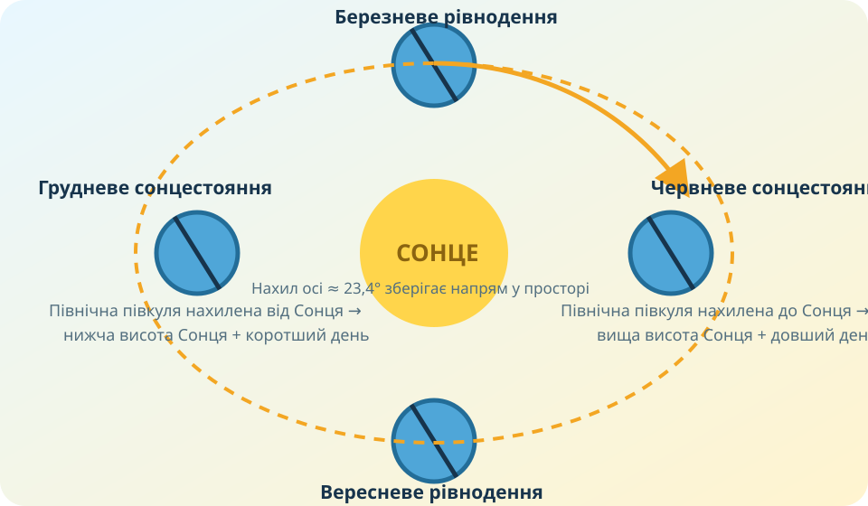

Спочатку — дані, не визначення
Перед Вами три міста Північної півкулі. Натисніть картку й спрогнозуйте, де річна амплітуда буде найбільшою.
Побудуйте річний графік температури
Навчальний ряд для Києва, °C
Дані округлені для навчального обчислення; мета — алгоритм аналізу графіка.
Натисніть «Побудувати графік».
1. Середня річна температура
Складіть 12 середніх місячних температур і поділіть на 12.
2. Річна амплітуда
A = Tmax − Tmin. Від’ємний Tmin віднімаємо зі знаком.
Одна широта — різні амплітуди
Доказове питання
Київ, Лондон і Астана лежать майже на одній широті. Чому амплітуди так відрізняються?
Що створює річний цикл?

Нахил осі змінює протягом року висоту Сонця і тривалість дня у кожній півкулі.
Міф-пастка
«Літо настає тому, що Земля в цей час ближче до Сонця».
NASA пояснює: нахил осі Землі приблизно 23,4–23,5° є ключовою причиною сезонів; відстань до Сонця не пояснює протилежні сезони у двох півкулях.
Коротке відео NASA: What Causes Seasons? ↗Перевірте Землю з космосу
Сформулюємо правила
Середня температура
Середня місячна — узагальнення температур за місяць. Середню річну в шкільних задачах знаходять як середнє арифметичне 12 середніх місячних температур.
Амплітуда
Різниця між найвищою і найнижчою температурою за обраний період: A = Tmax − Tmin.
Річний хід
Закономірна зміна температури за місяцями. На нього впливають широта, сезонна зміна надходження сонячної енергії, близькість океану та інші чинники.
Чому Астана має більшу річну амплітуду, ніж Лондон?
§26 + власний температурний графік
- Опрацюйте §26.
- Візьміть 7–12 температурних значень із власного календаря погоди або надійного джерела.
- Побудуйте графік, знайдіть середню температуру та амплітуду.
- Напишіть 2 речення висновку: де максимум, де мінімум і чому.
Фінальна перевірка
Тест відкриється лише після заповнення всіх трьох полів.